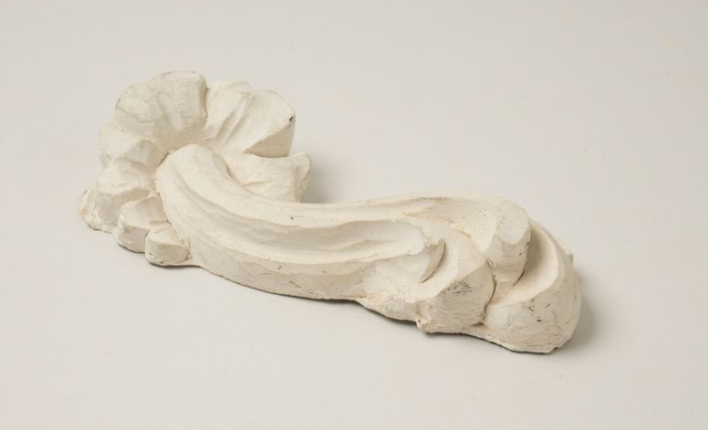

Giessen
Verfahren
Bei den Giessverfahren entstehen Werkstücke, indem flüssige, breiige oder pastenförmige Werkstoffe in eine Giess-form gefüllt werden und darin aushärten bzw. erstarren.
Ablauf Giessen
Gips
Nachfolgend ist ein schematischer Ablauf wie Gips gegossen wird. Es können jedoch Materialien wie Stein, Wachs, die weniger als 200 Grad erwärmt sind, gegossen werden.

1
Silikonformen aufeinanderlegen und zusammenbinden

2
Neues Modell giessen

3
Naht abschleifen

4
Neue Form Duplikat von Ur-sprungsform
Eigenschaften
Gipsguss
❚ gleichmässige Oberfläche
❚ glatt
Anwendungen
Gipsguss
❚ Kunstgewerbe
❚ Gesundheitswesen
❚ Künstlerbedarf
❚ Bauwesen Modellbau
weiterlesen
Weitere Objekte im Sitterwerk
aus Gips
